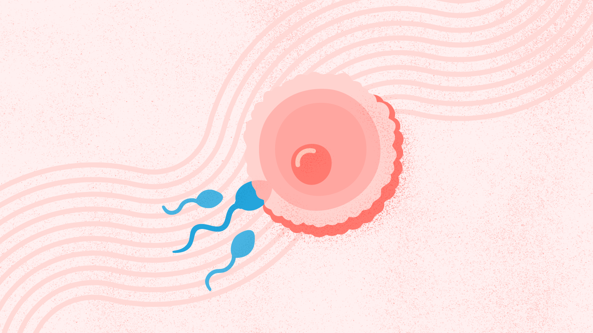
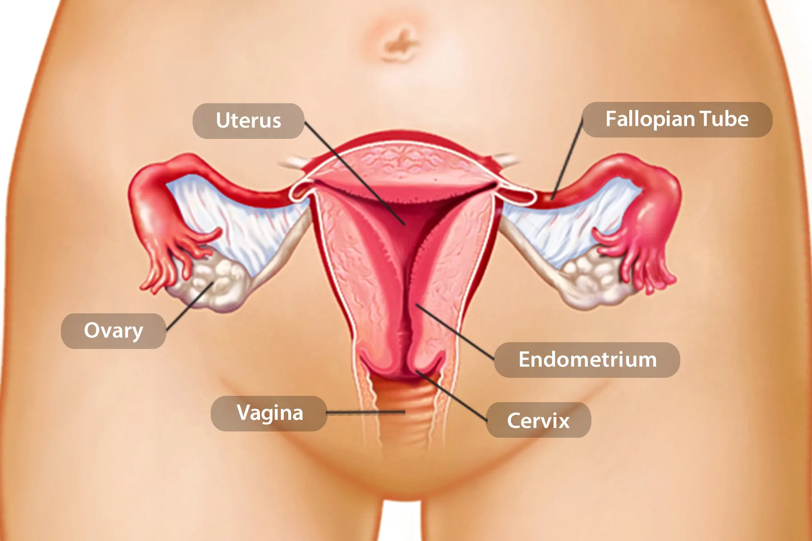
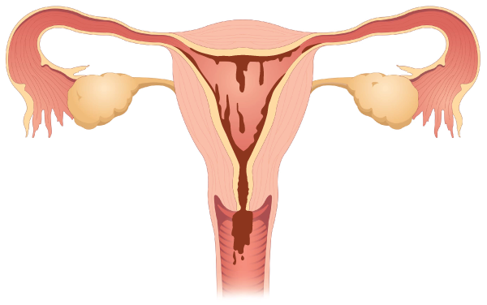
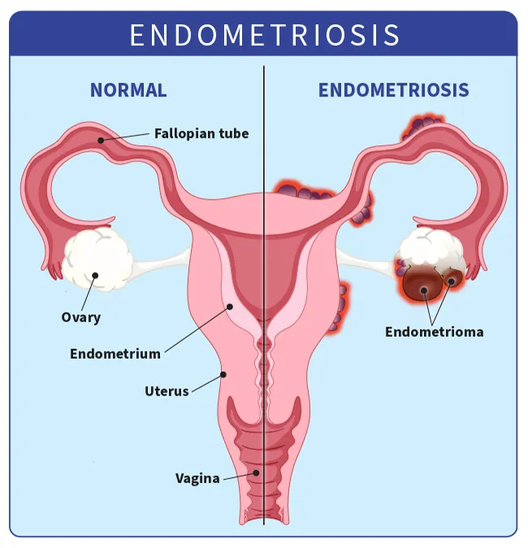
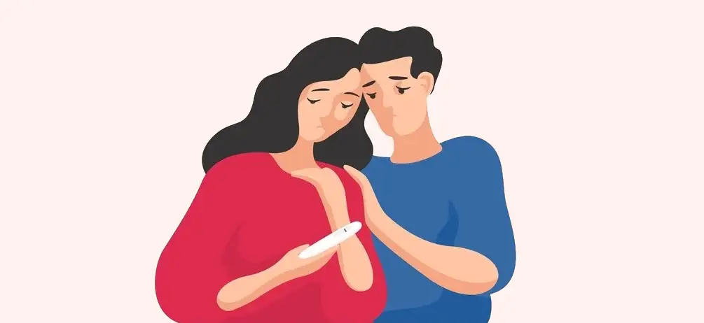
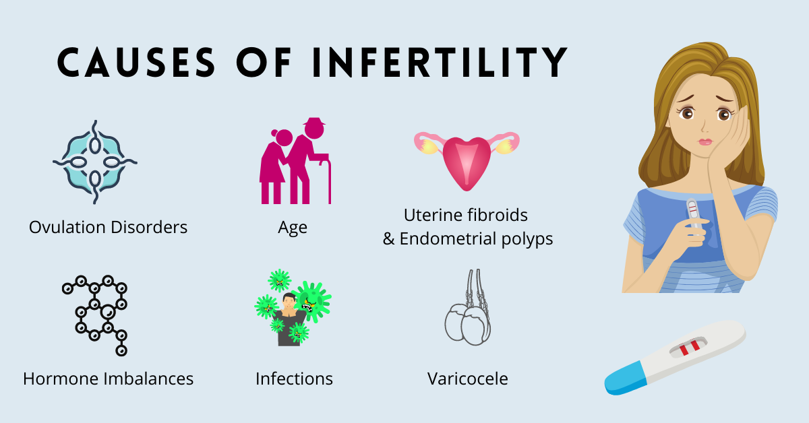
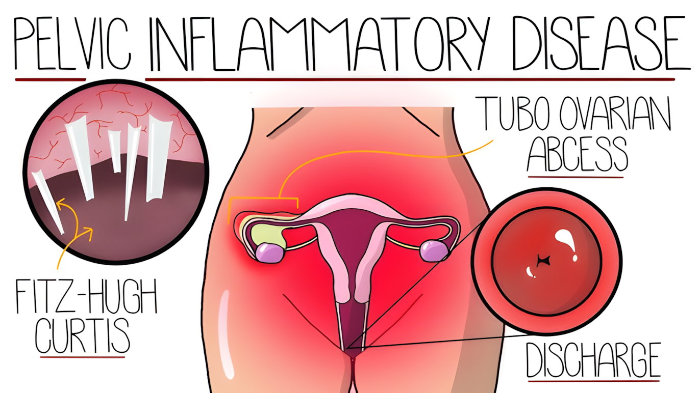
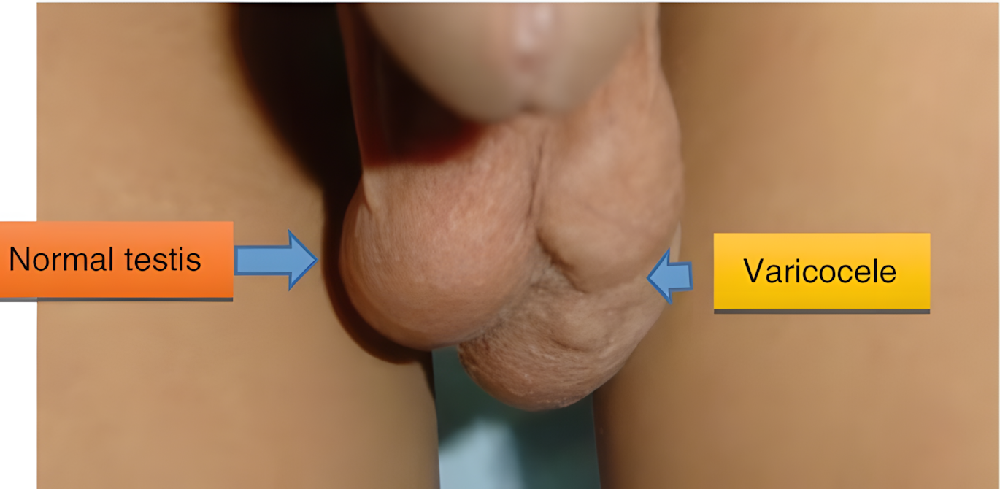
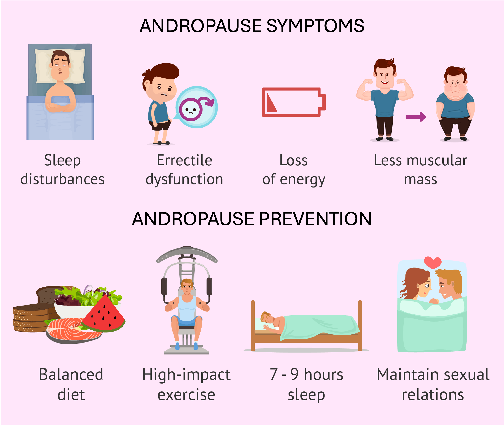

Fertility
How bodies make eggs and sperm, why some people struggle to conceive, and what changes with age — separating what we actually know about fertility from what we only think we know.

What Do You Already Know About Your Body?
Quick quiz. True or false?
- You can't get pregnant during your period.
- PMS is mostly in a person's head.
- Menopause happens when a woman's body runs out of eggs.
- Human sperm counts have been plummeting for decades.
What are your answers? How confident are you? If you feel a bit lost, don't worry, you're not alone. Most of us built our understanding of fertility out of spare parts: a rushed health class, some stuff you read on social media, friends who don't actually know any more than you do. The result is a patchwork of half-truths, old wives' tales, and confident guessing.
This chapter is the repair job. We'll take the things "everybody knows" about fertility — how bodies make eggs and sperm, why some people struggle to conceive, what changes with age — and hold them up to the light. You may already know a lot about these topics. But I'm willing to bet that some of what you "know" is actually wrong.
Let's start where the cycle of life literally begins each month.
5.1 Female Fertility
The female reproductive system runs on a roughly monthly rhythm called the menstrual cycleMenstrual cycleThe roughly monthly hormonal rhythm in people with ovaries that prepares the body for a possible pregnancy. It averages about 28 days but commonly ranges from 21 to 35, and it unfolds in five phases driven by the back-and-forth of hormones between the brain and ovaries.View in glossary →. Before we follow that cycle, it helps to know what chemical messengers run the show.
The brain sends out hormones to start the monthly cycle: follicle stimulating hormone (FSH)Follicle stimulating hormone (FSH)A hormone the brain sends to the ovaries or testes. In people with ovaries it tells follicles to grow and eggs to mature; in people with testes it works with testosterone to keep sperm production going.View in glossary → and luteinizing hormone (LH)Luteinizing hormone (LH)A hormone the brain sends to the ovaries or testes. A sharp surge of LH triggers ovulation in people with ovaries, while in people with testes it tells certain cells to make testosterone.View in glossary →. These travel down to the ovaries and tell them what to do. The ovaries reply with their own messages, mainly two hormones called estrogenEstrogenOne of the two main hormones the ovaries release. It nourishes maturing eggs and helps build the uterine lining, and its rise and fall across the cycle forms part of the feedback loop between the brain and ovaries.View in glossary → and progesteroneProgesteroneOne of the two main ovarian hormones. After ovulation the corpus luteum releases it to keep the uterine lining plush and ready, and its sharp drop near the end of the cycle helps trigger menstruation.View in glossary →. The back-and-forth works like a thermostat: the brain sends a signal, the ovaries respond, and that response tells the brain whether to keep sending or ease off. The thing to remember is the basic loop — brain talks to ovaries, ovaries talk back. That conversation is what drives everything below (Silverthorn, 2013)ReferenceSilverthorn, D. U. (2013). Human physiology: An integrated approach (6th ed.). Pearson Education..

The Menstrual Cycle: A Monthly Reset
Humans are one of the only animals to have a menstrual cycle. Most female mammals run on an estrous cycle. They're sexually receptive ("in heat") only during a short fertile window each cycle or season, and they don't shed blood at the end of their cycle. Only humans and a handful of other primates menstruate. Also, unlike most animals, human females can be interested in sex at any point in the cycle, not just around ovulation.
Each month, the body gets ready for a possible pregnancy. It builds a soft, blood-rich lining inside the uterus called the endometriumEndometriumThe soft, blood-rich lining the uterus builds each month to support a possible pregnancy. If a fertilized egg implants, the lining sustains it; if not, the body sheds the lining as the menstrual period and starts fresh.View in glossary →. This is like preparing a nursery for a baby who might arrive. If a fertilized egg shows up and settles in, the nursery is ready. If no egg gets fertilized that month, the body clears out the lining and starts fresh. The period blood that is shed each month is the endometrium tissue that wasn't needed. In other words, the period is like a reset button, getting rid of old tissue before new tissue can be installed in the uterus next month.

A quick note on counting: doctors call the first day of bleeding "day 1" of the menstrual cycle, simply because it's the easiest moment to spot. For the purposes of this book (and class), we'll begin the start of the menstrual cycle after the end of the period, as that's when the cycle truly resets. Menstrual cycles average about 28 days, but cycles spanning anywhere from about 21 to 35 days is common and perfectly normal. Each menstrual cycle contains 5 distinct phases.
The Five Phases
1. Follicular phaseFollicular phaseThe first phase of the menstrual cycle, lasting roughly the first 14 days, during which several follicles grow and their eggs mature. A brief dip in estrogen tests the eggs so that all but the strongest dry up, after which estrogen rises again to nourish the surviving egg.View in glossary →. In the ovaries, a handful of tiny fluid-filled sacs called folliclesFolliclesThe tiny, fluid-filled sacs in the ovaries, each holding one immature egg. During the first half of the cycle a handful begin to grow, but usually only the single strongest one goes on to release a mature egg at ovulation.View in glossary → begin to grow, each holding one immature egg. Picture dozens of seeds sprouting at once in a field. Throughout the first 14 days of the cycle, these eggs mature. A few days before they're fully mature, the hormones feeding these eggs — primarily estrogen — suddenly drop. This is the body's way of testing the eggs to see which is the strongest. After all but one (sometimes two) eggs "dry up" (become inviable), the estrogen spigot is turned back on to nourish the remaining (strongest) egg.

2. OvulationOvulationThe moment a single mature egg bursts from its follicle and is swept into the fallopian tube, where it can be fertilized. The egg remains viable for only about 12 to 24 hours, the short window people mean when they say someone is ovulating.View in glossary →. The one mature egg bursts out of its follicle and gets swept into the fallopian tube. This is the time when an egg can be fertilized by sperm, as it starts to travel down the fallopian tube to the uterus. The mature egg is only viable (able to be fertilized) for about 12–24 hours. This short window of maximum fertility is what people are referring to when they say a woman is ovulating.
3. Luteal phaseLuteal phaseThe phase that follows ovulation, in which the corpus luteum pumps out progesterone to keep the uterine lining ready for a fertilized egg. It is the steady, predictable half of the cycle, lasting almost always about 14 days, so variation in cycle length comes from the first half rather than this one.View in glossary →. The empty follicle left behind doesn't just disappear. It becomes a small, temporary gland called the corpus luteumCorpus luteumThe small, temporary gland that forms from the empty follicle after ovulation. It pumps out progesterone to keep the uterine lining plush and ready for a possible pregnancy, and it shuts down if no fertilized egg implants.View in glossary → that pumps out progesterone. Progesterone's job is to keep that uterine lining plush and ready. This is the steady, predictable half of the cycle — it's almost always about 14 days long. So when cycles run long or short, it's the first half doing the varying, not this one. This is also where the endometrium is built up the most. The endometrium then sits and waits to see if a fertilized egg will arrive and settle in.
4. Premenstrual phasePremenstrual phaseThe phase just before menstruation, when the corpus luteum shuts down and estrogen and progesterone both drop. Rising prostaglandins make the uterus contract, producing cramps, and bloating, fatigue, and mood changes can appear as well.View in glossary →. If no fertilized egg implants, the corpus luteum shuts down, and estrogen and progesterone both drop. That drop in hormones can have big effects in the body. With progesterone gone, chemicals called prostaglandinsProstaglandinsHormone-like chemicals that rise when progesterone falls before a period. They act as a "contract now" signal that makes the uterine muscle squeeze, and those squeezes are what people feel as cramps.View in glossary → rise. Prostaglandins are basically a "contract now" signal that makes the muscle of the uterus squeeze. Those squeezes are what women feel as cramps. Bloating, fatigue, and mood changes can show up here too. Anti-inflammatory medicines, like ibuprofen, can help with cramps, as they can relieve swelling in the sore muscles lining the uterus. These uncomfortable changes in the body during this phase are called premenstrual symptoms (PMS)Premenstrual symptoms (PMS)The cluster of physical and emotional changes, also called premenstrual syndrome, that can appear in the day or two before a period. Common examples include mood swings, irritability, bloating, fatigue, breast tenderness, and cramps, all driven mainly by the late-cycle drop in estrogen and progesterone. Research suggests these symptoms are far less common and dramatic than cultural portrayals imply.View in glossary → and will be discussed in more detail later in the chapter.
5. Menses (the period)Menses (the period)The final phase of the menstrual cycle, when hormone levels bottom out and the uterine lining breaks down and leaves the body through the vagina over several days. Once the old tissue clears, hormone levels rise again and the next cycle begins.View in glossary →. Now hormones are at their lowest. Without estrogen and progesterone to hold it in place, the uterine lining breaks down and leaves the body through the vagina over the next few days. After all of the excess tissue has been cleared, hormone levels will begin to rise again, causing the next batch of follicles to start growing. The cycle has restarted.

People manage menstrual flow in several ways — pads, tampons, menstrual cups, period underwear, menstrual discs. Each has trade-offs in cost, comfort, convenience, and environmental impact. There is no single "right" choice. Pads and tampons are used most commonly in the United States. Both provide protection, but need to be changed every 2–4 hours, depending on flow. Leaving in tampons for too long can, in rare cases, lead to toxic shock syndrome (TSS), a serious infection. Menstrual cups, on the other hand, can be left in the vagina to collect blood for up to 12 hours. This allows a woman to change her cup just twice a day, usually in the comfort of her home, rather than throughout the day at work or school. While pads and tampons need to be thrown out after use, leading to lots of waste and excess costs to replace them, menstrual cups, discs and period underwear can be cleaned and reused. With a little practice, most women who learn to use menstrual cups or discs tend to prefer them over pads and tampons for these reasons.


The menstrual cycle runs on a feedback loop between the brain and the ovaries. Which two hormones does the brain send to the ovaries?
Tracking Ovulation: Reading Your Body's Signals
While a woman's ovulation is not as "advertised" as in other animals, there are subtle signals you can learn to detect. Whether someone is trying to get pregnant, trying to avoid it, or just wants to understand their own rhythm, here are 5 methods women can use to detect when they are ovulating.
- The calendar methodCalendar methodA way of estimating ovulation by counting the length of a complete menstrual cycle and assuming ovulation lands near the middle. It is the simplest tracking method but also the least reliable, because the actual day of ovulation shifts from cycle to cycle and rarely falls exactly on day 14.View in glossary →. Count how many days it takes you to go through a complete cycle (from the first day of the period one cycle to the first day of the period for the next cycle) and assume ovulation lands around the middle. It's the simplest method, but also the least reliable, because ovulation day can move around. Despite the "day 14" rule of thumb, most people don't ovulate exactly on day 14 of their cycle.
- Cervical mucusCervical mucusThe fluid produced by the cervix, whose texture changes across the cycle. Near ovulation it turns clear, slippery, and stretchy, much like raw egg white, which both helps sperm travel and signals that fertility is high.View in glossary →. Near ovulation, cervical mucus changes from dry and sticky to clear, slippery, and stretchy — a lot like raw egg white. That slippery mucus actually helps sperm move, and it's a reliable signal of fertility.
- Cervical changesCervical changesShifts in the position and texture of the cervix across the menstrual cycle. Around peak fertility the cervix softens and opens slightly, a change a person can detect by reaching to the back of the vagina with one or two fingers.View in glossary →. Around peak fertility, the cervix softens and opens slightly. People can check this by inserting 1 or 2 fingers into their vagina when unaroused and reach all the way to the back to feel their cervix.
- Basal body temperature (BBT)Basal body temperature (BBT)The body's resting temperature, measured first thing in the morning before getting out of bed. It rises by about half a degree right after ovulation because of increased progesterone, so tracking it confirms that ovulation has already happened rather than predicting when it is about to occur.View in glossary →. The temperature of the cervix (the back of the vagina) ticks up by about half-a-degree right after ovulation. This is the result of increased levels of progesterone. Doctors and health clinics can give women special temperature gauges to measure this temperature change. The catch is that changes in BBT only signal that ovulation has already come and gone. So, it's not a great way to measure when ovulation is approaching; it's only useful for tracking when it has already passed. Also, measurement must be done first thing in the morning, before getting out of bed, or else the readings can be thrown off.
- Ovulation predictor kits (OPKs)Ovulation predictor kits (OPKs)Drugstore tests that detect the surge of luteinizing hormone occurring roughly a day before ovulation. They are precise and easy to use, though testing repeatedly across a cycle can become expensive.View in glossary →. These drugstore tests detect the surge of LH that comes roughly a day before ovulation. They're precise and easy, but repeated testing can get expensive.

It's important to note that while an egg can only be fertilized during the 12–24 hour phase of ovulation, this doesn't mean a woman can only get pregnant 1 day out of the month. Sperm can survive inside a woman's body for up to 5 days, lying in wait for a fertilized egg to come through (Wilcox et al., 1995)ReferenceWilcox, A. J., Weinberg, C. R., & Baird, D. D. (1995). Timing of sexual intercourse in relation to ovulation. New England Journal of Medicine, 333(23), 1517–1521.. This means that if a woman has sex up to 5 days before ovulating, that sperm can still get her pregnant.
An egg can be fertilized for only about 12 to 24 hours, yet someone can become pregnant from sex during their period. Why?
When the Cycle Causes Problems
For most people, a period is a routine inconvenience. For some, it brings real medical trouble. Four common menstrual problems affect most women at some point in their lives.
DysmenorrheaDysmenorrheaThe medical term for painful periods. Almost everyone who menstruates experiences some cramping, but 10 to 20 percent have pain severe enough to interfere with daily life. The cramps come from prostaglandins, which make the uterine muscle contract, and they often respond to NSAIDs and heat.View in glossary → is the medical name for painful periods. Almost everyone who menstruates experiences cramping at some point, but 10 to 20% of women experience pain bad enough to interfere with daily life. The culprit is the prostaglandins we met earlier — those "contract now" chemicals that make the uterus squeeze (Deligeoroglou, 2000)ReferenceDeligeoroglou, E. (2000). Dysmenorrhea. Annals of the New York Academy of Sciences, 900, 237–244.. People who make more of this hormone tend to have more severe cramps. While there is no way to completely stop cramping, several over-the-counter drugs called NSAIDsNSAIDsOver-the-counter anti-inflammatory drugs, including ibuprofen, naproxen, and aspirin, used to relieve menstrual cramps. They work by easing the inflammation behind the painful uterine contractions of a period.View in glossary → can help. These go by names like ibuprofen, naproxen, and aspirin. They work by easing inflammation, which is the main cause of pain during uterine muscle contractions. Other helpful remedies include heating pads placed on the lower belly and taking hot baths. Both help relieve cramping in sore muscles.
EndometriosisEndometriosisA serious condition in which endometrial tissue grows outside the uterus, such as on the ovaries, fallopian tubes, bladder, or abdominal wall. Because that stray tissue still responds to monthly hormone signals, it swells and bleeds with each cycle but has nowhere to drain, producing severe pain, scarring, and often infertility. It is frequently underdiagnosed and mistaken for ordinary bad cramps.View in glossary → is a much more serious condition, but it's often mistaken for particularly bad cramping. Here, endometrium tissue grows where it shouldn't, sometimes on the ovaries, the fallopian tubes, the bladder, or even the inner walls of the abdomen. That stray tissue still answers to the monthly hormone signals, so it swells and bleeds along with the rest of the endometrium tissue with each cycle. Since it has nowhere to drain, it results in severe pain, scarring, and often infertility. Endometriosis is serious and frequently underdiagnosed. Treatment ranges from hormones to surgery, and the chronic pain it causes is itself a target for treatment (Basson et al., 2020)ReferenceBasson, R., Zdaniuk, B., & Brotto, L. A. (2020). Psychological treatment of women with chronic pelvic pain. Journal of Sexual Medicine, 17(4), 794–803..

AmenorrheaAmenorrheaThe absence of menstrual periods. Primary amenorrhea describes someone who has not begun menstruating by age 16, while secondary amenorrhea describes someone who previously menstruated but has stopped for at least three months for a reason other than pregnancy. Common causes include hormone imbalances, ovarian cysts or tumors, extreme stress, eating disorders, and very intense exercise.View in glossary → is when periods don't come at all. Primary amenorrhea is when someone hasn't started menstruating by age 16. Secondary amenorrhea is when someone who used to menstruate stops for at least 3 months for a reason other than pregnancy. Causes include hormone imbalances, cysts or tumors, extreme stress, eating disorders, and very intense exercise. In many ways, if the body isn't capable of having a healthy pregnancy, the body stops the menstrual cycle so that it doesn't get itself into trouble.
Polycystic ovary syndrome (PCOS)Polycystic ovary syndrome (PCOS)A common condition in which the body produces too many androgens, leading to irregular periods, acne, and small fluid-filled cysts on the ovaries. It affects roughly 1 in 10 women worldwide, runs in families, is linked to how the body processes sugar, and is a leading cause of female infertility.View in glossary → is a medical condition that happens when a person's body makes too many male hormones, called androgensAndrogensA group of hormones, including testosterone, often labeled "male" hormones even though both male and female bodies produce them. Overproduction of androgens in people with ovaries drives many of the symptoms of polycystic ovary syndrome, such as irregular periods and acne.View in glossary → (WHO, 2026)ReferenceWorld Health Organization. (2026, January 22). Polycystic ovary syndrome. https://www.who.int/news-room/fact-sheets/detail/polycystic-ovary-syndrome. These extra hormones can cause uneven periods, bad acne, and small fluid-filled bumps to grow on the ovaries. Scientists do not know the exact cause of PCOS, but they know it runs in families and is linked to how the body processes sugar. It is a surprisingly common condition, affecting about 1 in 10 women around the world, though many people have it and do not even realize it (Zhai & Wang, 2025)ReferenceZhai, F., & Wang, X. (2025). Global burden and future trends of polycystic ovary syndrome. International Journal of Women's Health, 17, 1245–1255. https://pmc.ncbi.nlm.nih.gov/articles/PMC12537526/.

Menstrual cramps (dysmenorrhea) are driven mainly by prostaglandins, which is why NSAIDs like ibuprofen relieve them. What do prostaglandins do?
The Psychology of Menstruation
A woman's period is never just biology. It is also intertwined with psychology — mood, meaning, relationships, and culture. The same physical event can feel like a burden in one home and a celebration in another; and a big part of why comes down to what people are taught to believe about it.
PMS and PMDD
Premenstrual syndrome, or PMS, refers to the physical and emotional changes that show up in the day or two before a period (Yonkers et al., 2008)ReferenceYonkers, K. A., O'Brien, P. M. S., & Eriksson, E. (2008). Premenstrual syndrome. The Lancet, 371(9619), 1200–1210.. The list is familiar to a lot of people: mood swings, irritability, sadness, anxiety, bloating, fatigue, breast tenderness, cramps, and food cravings. The main engine is that late-cycle hormone drop — falling estrogen and progesterone — plus rising prostaglandins (Bäckström et al., 2003)ReferenceBäckström, T., Andréen, L., Birzniece, V., et al. (2003). The role of hormones and hormonal treatments in premenstrual syndrome. CNS Drugs, 17(5), 325–342.. A sudden drop in estrogen by itself is reliably tied to experiences of fatigue, low mood, and water retention (Schmidt et al., 1998)ReferenceSchmidt, P. J., Nieman, L. K., Danaceau, M. A., Adams, L. F., & Rubinow, D. R. (1998). Differential behavioral effects of gonadal steroids in women with and in those without premenstrual syndrome. New England Journal of Medicine, 338(4), 209–216..
Normally, high estrogen limits the effects testosteroneTestosteroneThe principal androgen, produced in large amounts by the testes and in smaller amounts by the ovaries. It drives sperm production and male sexual development, and in people with ovaries its effects are usually held in check by estrogen except briefly before a period.View in glossary → has in a woman's body. When estrogen drops right before the period, testosterone gets briefly "unmasked," meaning that testosterone affects the woman's body more than usual. This can bring about oily skin, acne, and irritability (Geller et al., 2014)ReferenceGeller, L., Rosen, J., Frankel, A., & Goldenberg, G. (2014). Perimenstrual flare of adult acne. The Journal of Clinical and Aesthetic Dermatology, 7(8), 30–34.. For some people it also brings a noticeable spike in sex drive. It's the same symptoms commonly seen in teenage boys as they go through puberty (oily, angry and horny!).
Research on the severity of PMS symptoms may surprise you. It turns out that, for most women, PMS is far less dramatic than cultural portrayals of PMS may have us believe. When researchers measure daily changes in mood, food cravings, and other symptoms of PMS, they find that for 80% of women, their menstrual cycle does not reliably predict these symptoms (Beddig et al., 2019; Romans et al., 2013)ReferencesBeddig, T., Reinhard, I., & Kuehner, C. (2019). Stress, mood, and cortisol during daily life in women with Premenstrual Dysphoric Disorder (PMDD). Psychoneuroendocrinology, 109, 104372.
About 3 to 5% have symptoms severe enough for an actual clinical diagnosis, called premenstrual dysphoric disorderPremenstrual dysphoric disorder (PMDD)A severe, clinically diagnosed form of premenstrual distress affecting about 3 to 5 percent of people who menstruate. It brings overwhelming sadness, sudden rage, or intense anxiety in the days before a period and appears to reflect a heightened brain sensitivity to normal hormonal shifts.View in glossary → (PMDD; Gao et al., 2025)ReferenceGao, M., Zhang, H., & Wang, L. (2025). Premenstrual dysphoric disorder prevalence and symptoms: A population-based study. BJOG: An International Journal of Obstetrics & Gynaecology, 132(7), 890–898. https://doi.org. PMDD is a serious medical condition that causes extreme emotional and physical changes right before a person's monthly period. It is much more severe than normal PMS. A person with PMDD might feel overwhelming sadness, sudden rage, or intense anxiety that makes it very hard to go to school, do homework, or get along with friends and family. Scientists do not know the exact cause of PMDD, but research shows it is a biological reaction where the brain is overly sensitive to normal hormonal changes that happen during the monthly cycle. Women who suffer with PMDD can be helped with lifestyle changes, such as eating more complex carbs and lowering intake of sugar and caffeine, as well as doing regular aerobic exercise or yoga (ACOG, 2023; Child Mind Institute, 2024)ReferencesAmerican College of Obstetricians and Gynecologists. (2023). Management of premenstrual disorders (Clinical Practice Guideline No. 3). https://www.acog.org/clinical/clinical-guidance/clinical-practice-guideline/ articles/2023/12/management-of-premenstrual-disorders | Child Mind Institute. (2024, August 20). Quick guide to premenstrual dysphoric disorder (PMDD). https://childmind.org/guide/quick-guide-to-premenstrual- dysphoric-disorder-pmdd/. Some women also benefit from taking anti-depressant medication or hormonal birth control pills.

So why does PMS loom so large in our imagination? Partly because the media has long exaggerated it, which fed a lazy and sexist habit of waving off any woman's bad mood with "oh, it's just PMS." That move does double damage: it dismisses real feelings and places blame and shame on women's bodies (Chrisler & Caplan, 2002)ReferenceChrisler, J. C., & Caplan, P. (2002). The Strange Case of Dr. Jekyll and Ms. Hyde: How PMS Became a Cultural Phenomenon and a Psychiatric Disorder. Annual Review of Sex Research, 13(1), 274–306.
To demonstrate the effect of expectations on PMS, researchers in one class experiment hooked up women to a fake machine and told them it could predict their next period. Half of the women were told their period was coming in just 2 days. Those led to believe they were "premenstrual" reported significantly more cramps, bloating, and mood change than those told they were mid-cycle — even though the machine measured nothing, and the groups were assigned at random (Ruble, 1977)ReferenceRuble, D. N. (1977). Premenstrual symptoms: A reinterpretation. Science, 197(4300), 291–292.. Just believing your period is coming can make you feel worse.

Sex, Periods, and the Myths Around Them
In much of Western culture, there's an unspoken rule that periods are gross, shameful, or somehow "unclean." That belief, called the menstrual tabooMenstrual tabooThe cultural belief, common in much of the West, that periods are dirty, shameful, or somehow unclean. It shapes real behavior, leading people to avoid sex during menstruation, feel less attractive, or feel too embarrassed to talk about their periods, even though menstrual blood carries no health hazard.View in glossary →, shapes real world behavior. People may avoid sex during their period, feel less attractive, or feel too embarrassed to even talk about their period. Partners may react with discomfort or avoidance, sometimes simply because no one ever taught them otherwise.

A reality check helps. Menstrual blood carries no harmful bacteria and isn't a health hazard. Couples who want to have sex during a period manage flow in simple ways, like timing sex when there is a lighter flow, using a towel or wet wipe to clean the area before or during sex, or relying on a menstrual disc to stop the flow while having sex.
Another common myth about menstruation is the belief that a woman cannot get pregnant while on her period. This is false. Remember that sperm can survive for up to 5 days in the uterus. In a shorter cycle, ovulation can arrive soon after the period ends. So, sperm deposited during the period can still be alive and waiting when an egg is released a few days later (Wilcox et al., 1995)ReferenceWilcox, A. J., Weinberg, C. R., & Baird, D. D. (1995). Timing of sexual intercourse in relation to ovulation. New England Journal of Medicine, 333(23), 1517–1521.. The odds are lower than at peak fertility, but "lower" is not "zero." Anyone using this as their birth control plan is rolling the dice.
In Ruble's 1977 "fake machine" experiment, women were misled about where they were in their cycle. The results best demonstrated that —
5.2 Male Fertility
If the female system is a monthly event planner — building up, peaking, and resetting on a roughly 28-day schedule — the male system is more like a factory that never closes. Sperm production hums along day and night, all year, for most of a person's life.

The same kind of hormone messengers we met earlier run this factory too. The brain sends out FSH and LH, and these travel to the testes. LH tells certain cells to make testosterone, and FSH (with testosterone's help) keeps sperm production going. When everything is set at max production, the testes send back a signal — a hormone called inhibinInhibinA hormone the testes send back to the brain when sperm production is running at full capacity. Its message is essentially "ease off," forming part of the feedback loop that keeps male hormone and sperm production in balance.View in glossary → — that basically says, "We're good, ease off." It's the same thermostat idea as before, just without the monthly rhythm (Silverthorn, 2013)ReferenceSilverthorn, D. U. (2013). Human physiology: An integrated approach (6th ed.). Pearson Education..
Sperm Production
How Sperm Are Made
Sperm are built in the testes, inside tightly coiled tubes called the seminiferous tubulesSeminiferous tubulesThe tightly coiled tubes inside the testes where sperm are produced. "Nurse" cells along these tubes feed and protect each developing sperm while neighboring cells make testosterone.View in glossary →. Picture a vast, miniature assembly line. Along the way, "nurse" cells feed and protect each developing sperm, while neighboring cells churn out testosterone. There's even a security wall — the blood–testis barrier — that hides the sperm from the body's own immune system. Otherwise, the body's immune cells would treat sperm as strangers and destroy them (Silverthorn, 2013)ReferenceSilverthorn, D. U. (2013). Human physiology: An integrated approach (6th ed.). Pearson Education..

Making a single sperm from scratch takes about two to two-and-a-half months (Heller & Clermont, 1963)ReferenceHeller, C. G., & Clermont, Y. (1963). Spermatogenesis in man: An estimate of its duration. Science, 140(3563), 184–186.. That sounds slow, until you realize the assembly line never slows down for rest. A healthy pair of testes pumps out something like a few hundred million sperm every single day (Amann, 2008)ReferenceAmann, R. P. (2008). The cycle of the seminiferous epithelium in humans: A need to revisit? Journal of Andrology, 29(5), 469–487.. Finished sperm keep rolling off the line nonstop, at a rate of about 2,500–5,000 mature sperm each second!

People with ovaries are born with every egg they will ever have — roughly one to two million at birth, dropping to a few hundred thousand by puberty (Wallace & Kelsey, 2010)ReferenceWallace, W. H. B., & Kelsey, T. W. (2010). Human ovarian reserve from conception to the menopause. PLoS ONE, 5(1), e8772.. Egg supplies never get refilled. People with testes are the opposite. They make brand-new sperm nonstop, for decades. Neither system lasts forever, though. Egg quantity and quality both decline with age, and the drop in quality gets noticeably steeper after the mid-30s (ACOG, 2014)ReferenceAmerican College of Obstetricians and Gynecologists, & American Society for Reproductive Medicine. (2014). Committee Opinion No. 589: Female age-related fertility decline. Obstetrics & Gynecology, 123(3), 719–721.. Sperm quality slips with age too, but not as quickly or dramatically. While a man's sperm count does begin to decline in his mid-30s, most men remain fertile well into their 40s (Pino et al., 2020)ReferencePino, V., Sanz, A., Valdés, N., Crosby, J., & Mackenna, A. (2020). The effects of aging on semen parameters and sperm DNA fragmentation. JBRA Assisted Reproduction, 24(1), 82–86. https://doi.org/10.5935/1518-0557.20190058.
Are Sperm Counts Falling?
When doctors check male fertility, they run a semen analysisSemen analysisA laboratory test of male fertility that measures how many sperm are present, how well they swim, and how normally they are shaped. Because any single number tells only part of the story, the results give a rough rather than definitive picture.View in glossary →. It looks at a few things: how many sperm there are (count and concentration), how well they swim (motility), and how normally they're shaped (morphology). Together these give a rough picture of fertility — rough, because no single number tells the whole story.
In recent years, those numbers have set off alarms. A widely cited series of studies pooled data from around the world and reported that average sperm counts have dropped by about 60% since the 1970s, with the drop continuing into recent years (Levine et al., 2017, 2023)ReferencesLevine, H., Jørgensen, N., Martino-Andrade, A., Mendiola, J., Weksler-Derri, D., Mindlis, I., Pinotti, R., & Swan, S. H. (2017). Temporal trends in sperm count: A systematic review and meta-regression analysis. Human Reproduction Update, 23(6), 646–659. | Levine, H., Jørgensen, N., Martino-Andrade, A., Mendiola, J., Weksler-Derri, D., Jolles, M., et al. (2023). Temporal trends in sperm count: A systematic review and meta-regression analysis of samples collected globally in the 20th and 21st centuries. Human Reproduction Update, 29(2), 157–176.. That might mean that men today are producing less than half the healthy sperm as men 50 years ago.

It's well known that a man's health impacts his sperm production, with factors such as obesity, diabetes, smoking, and consumption of ultra-processed foods causing significant declines (Rooney & Domar, 2023; Valle-Hita et al., 2024)ReferencesRooney, K. L., & Domar, A. D. (2023). The impact of obesity and metabolic health on male fertility: A systematic review. Fertility and Sterility, 121(1), 30–42.

Some researchers argue that it's hard to say what exactly is happening to human sperm counts. The way sperm is measured has changed over the decades, which makes old and new numbers tricky to compare. Counts also swing a lot — from man to man, and even week to week in the same man — and being above a certain threshold matters more than having the highest possible number. Part of the recent "decline" in sperm counts might be a measurement story as much as a biological one (Boulicault et al., 2022)ReferenceBoulicault, M., Perret, M., Galka, J., Borsa, A., Gompers, A., Reiches, M. W., & Richardson, S. S. (2022). The future of sperm: A biovariability framework for understanding global sperm count trends. Human Fertility, 25(5), 888–902..
So where does that leave us? There's real reason to take environmental threats to fertility seriously. However, how this topic has been covered by some news outlets has verged into panic, with some claiming declining sperm counts are a threat to the future of the human race (Swan & Colino, 2021)ReferenceSwan, S. H., & Colino, S. (2021). Count down: How our modern world is threatening sperm counts, altering male and female reproductive development, and imperiling the future of the human race. Scribner.. It's more accurate to say that we're just not sure yet as to how big this problem really is. We need to collect more and higher quality data to truly know. Nevertheless, efforts to clean up our environment and better our health as a species is well worth it, regardless of sperm counts.
Which statement correctly contrasts egg and sperm production across the lifespan?
A semen analysis measures three things: count, motility, and morphology. What does "motility" refer to?
5.3 Infertility
Doctors define infertility as not being able to get pregnant after a year of regular, unprotected sex (CDC, 2021)ReferenceCenters for Disease Control and Prevention. (2021). Infertility. U.S. Department of Health and Human Services.. It's more common than most people assume: worldwide, about 1 in 6 people experience infertility at some point in their lives (WHO, 2023)ReferenceWorld Health Organization. (2023). Infertility prevalence estimates, 1990–2021. World Health Organization.. While scientists have spent decades studying the causes of infertility, there is still a lot left to learn. Estimates vary, but somewhere between 10–25% of infertility cases remain unexplained, with doctors unable to find any known cause (Schlegel et al., 2021)ReferenceSchlegel, P. N., Sigman, M., Collura, B., De Jonge, C. J., Eisenberg, M. L., Lamb, D. J., et al. (2021). Diagnosis and treatment of infertility in men: AUA/ASRM guideline part I. Journal of Urology, 205(1), 36–43.. This is called unexplained infertilityUnexplained infertilityInfertility for which doctors can find no identifiable cause even after testing. It accounts for somewhere between 10 and 25 percent of cases and serves as a reminder of how much about conception medicine still does not understand.View in glossary →, and it's a humbling reminder that even with modern medicine, we don't fully understand how every pregnancy does (or doesn't) happen.

Infertility doesn't just affect the body; it carries an emotional weight for many people. One of the most painful aspects is the loss of a sense of control (Domar & Seibel, 1997)ReferenceDomar, A. D., & Seibel, M. M. (1997). Emotional aspects of infertility. In M. M. Seibel (Ed.), Infertility: A comprehensive text (pp. 29–44). Appleton & Lange.. Most of us grow up assuming that if and when we have children is up to us. Infertility irreversibly shakes the core of that foundation, and that loss can be disorienting and angering (Nichols & Pace-Nichols, 2000)ReferenceNichols, W., & Pace-Nichols, M. (2000). Childless married couples. In W. C. Nichols, M. A. Pace-Nichols, D. S. Becvar, & A. Y. Napier (Eds.), Handbook of family development and intervention (pp. 171–188). John Wiley & Sons.. Many people describe fertility evaluation and treatment as one of the most upsetting experiences of their lives (Freeman et al., 1985)ReferenceFreeman, E. W., Boxer, A. S., Rickels, K., Tureck, R., & Mastroianni, L. (1985). Psychological evaluation and support in a program of in vitro fertilization and embryo transfer. Fertility & Sterility, 43(1), 48–53..
It can also become all-consuming. Treatment often means a strict medication schedule, repeated medical procedures, and side effects from medications — while careers, friendships, and the relationship itself get pushed to the side. Infertility can strain a couple's sex life too, as sex starts to feel less like intimacy and more like a job with a looming deadline. It can threaten a person's sense of identity and purpose, especially when someone has long pictured themselves as a parent. However, thanks to advances in modern medicine, most couples who face infertility do eventually conceive. The road there can be exhausting, but there is usually light at the end of the tunnel.
What Causes Infertility?
Many causes of infertility are silent and secretive — they come with no obvious signs or symptoms. Some STIs, like chlamydia, can quietly damage the reproductive system for years before a person finds out. For others, genes they've carried with them their whole lives may make them infertile. For many, it comes as a shock to discover they cannot get pregnant no matter how long they try.
In women, the most common cause of infertility is a problem with ovulation, accounting for about 40% of infertility cases in women (Practice Committee of the American Society for Reproductive Medicine, 2021)ReferencePractice Committee of the American Society for Reproductive Medicine. (2021). Fertility evaluation of infertile women: A committee opinion. Fertility and Sterility, 116(5), 1255–1265. https://doi.org/10.1016/j.fertnstert.2021.08.038. If ovulation doesn't occur reliably, pregnancy becomes much more difficult. The most common cause of ovulation problems is polycystic ovary syndrome, or PCOS (Endocrine Society, 2022)ReferenceEndocrine Society. (2022). Polycystic ovary syndrome. https://www.endocrine.org/patient-engagement/endocrine-library/pcos. As discussed earlier in the chapter, PCOS can come with a range of symptoms, mostly caused by the body overproducing certain hormones during each menstrual cycle.

Ovulation can also be disrupted by a condition called functional hypothalamic amenorrheaFunctional hypothalamic amenorrhea (FHA)A pause in ovulation that occurs when the brain effectively switches off the reproductive system in response to stress, undereating, or excessive exercise. The body reads these signals as evidence that conditions are too unsafe to support a pregnancy.View in glossary →, or FHA. This happens when the brain essentially "turns off" the reproductive system in response to stress, not eating enough, or too much exercise (Gordon et al., 2017; Saadedine et al., 2023)ReferencesGordon, C. M., Ackerman, K. E., Berga, S. L., Kaplan, J. R., Mastorakos, G., Misra, M., Murad, M. H., Santoro, N. F., & Warren, M. P. (2017). Functional hypothalamic amenorrhea: An Endocrine Society clinical practice guideline. Journal of Clinical Endocrinology & Metabolism, 102(5), 1413–1439. https://doi.org/10.1210/jc.2017-00131 | Saadedine, M., Kapoor, E., & Shufelt, C. (2023). Functional hypothalamic amenorrhea: Recognition and management of a challenging diagnosis. Mayo Clinic Proceedings, 98(9), 1376–1390. https://doi.org/10.1016/j.mayocp.2023.06.010. The body interprets these signals as signs that conditions are not safe enough to support a pregnancy. Thyroid problems and high levels of a hormone called prolactin can also interfere with ovulation. Some women experience early loss of ovarian function before age 40, called primary ovarian insufficiencyPrimary ovarian insufficiencyThe early loss of normal ovarian function before age 40. It affects up to 1 percent of women and can stem from autoimmune conditions, genetics, or cancer treatments.View in glossary →. This affects up to 1% of women and can be caused by autoimmune conditions, genetics, or cancer treatments (Shelling, 2010)ReferenceShelling, A. N. (2010). Premature ovarian failure. Reproduction, 140(5), 633–641. https://doi.org/10.1530/REP-09-0567.
The second major cause of female infertility involves structural problems — meaning something is physically blocking or damaging the reproductive organs. Blocked or scarred fallopian tubes are responsible for about 25–30% of female infertility cases (Cavarocchi et al., 2021)ReferenceCavarocchi, E., Torre, A., Bourdel, N., Misme-Aucouturier, B., & Callec, R. (2021). A review of tubal factors affecting fertility and its management. Journal of Gynecology Obstetrics and Human Reproduction, 50(9), 102194. https://doi.org/10.1016/j.jogoh.2021.102194. The most common cause of this blockage is an untreated STI. Chlamydia and gonorrhea can spread into the reproductive system and cause pelvic inflammatory diseasePelvic inflammatory disease (PID)An infection of the upper reproductive tract, most often caused when untreated chlamydia or gonorrhea spreads upward and scars the fallopian tubes. Because it frequently produces no symptoms, many people do not learn they have had it until they struggle to conceive.View in glossary →, or PID, which can permanently scar the fallopian tubes (Hoenderboom et al., 2019)ReferenceHoenderboom, B. M., van Benthem, B. H. B., van Bergen, J. E. A. M., Dukers-Muijrers, N. H. T. M., Götz, H. M., Hoebe, C. J. P. A., Leentvaar-Kuijpers, A., van der Sande, M. A. B., Morré, S. A., & Götz, H. M. (2019). Relation between Chlamydia trachomatis infection and pelvic inflammatory disease, ectopic pregnancy and tubal factor infertility in a Dutch cohort of women previously tested for chlamydia in a chlamydia screening trial. Sexually Transmitted Infections, 95(4), 300–306. https://doi.org/10.1136/sextrans-2018-053793. What makes this especially tricky is that PID often has no symptoms, so many women don't know they have it until they try to get pregnant.

Uterine fibroidsUterine fibroidsBenign growths in the wall of the uterus that can interfere with fertility by blocking the fallopian tubes or preventing a fertilized egg from implanting.View in glossary → — benign growths in the wall of the uterus — can also block the tubes or prevent a fertilized egg from implanting (Practice Committee of the American Society for Reproductive Medicine, 2017)ReferencePractice Committee of the American Society for Reproductive Medicine. (2017). Removal of myomas in asymptomatic patients to improve fertility and/or reduce miscarriage rate. Fertility and Sterility, 108(3), 416–425. https://doi.org/10.1016/j.fertnstert.2017.06.034. Endometriosis is another common structural cause. When endometrium tissue grows in places it shouldn't, it can block tubes, trap eggs, inflame surrounding tissue, and make the uterus less welcoming to a fertilized egg (Vercellini et al., 2014)ReferenceVercellini, P., Viganò, P., Somigliana, E., & Fedele, L. (2014). Endometriosis: Pathogenesis and treatment. Nature Reviews Endocrinology, 10(5), 261–275. https://doi.org/10.1038/nrendo.2013.255. This affects about 10% of reproductive-age women. Between 30–50% of women with endometriosis have difficulty getting pregnant as a result (Bulletti et al., 2010; Practice Committee of the American Society for Reproductive Medicine, 2012)ReferencesBulletti, C., Coccia, M. E., Battistoni, S., & Borini, A. (2010). Endometriosis and infertility. Journal of Assisted Reproduction and Genetics, 27(8), 441–447. https://doi.org/10.1007/s10815-010-9436-1 | Practice Committee of the American Society for Reproductive Medicine. (2012). Endometriosis and infertility: A committee opinion. Fertility and Sterility, 98(3), 591–598. https://doi.org/10.1016/j.fertnstert.2012.05.031. Finally, some cancer treatments — particularly radiation to the pelvis and certain chemotherapy drugs — can damage the ovaries or cause scarring, reducing or eliminating fertility. This is why doctors increasingly talk with cancer patients about preserving their fertility before treatment begins.

In men, one of the most common causes of infertility is a varicoceleVaricoceleA cluster of enlarged veins inside the scrotum, similar to a varicose vein in the leg, and one of the most common causes of male infertility. The pooled blood raises scrotal temperature, which can damage sperm, but surgical repair improves sperm quality in close to 70 percent of patients.View in glossary →. A varicocele is a group of enlarged veins inside the scrotum — similar to a varicose vein you might see in someone's leg. Varicoceles are found in about 15% of men overall, but they show up in up to 40% of men being treated for infertility. The main problem a varicocele causes is heat. The testicles need to stay slightly cooler than the rest of the body to make healthy sperm. When veins get enlarged, blood pools in the scrotum and raises the temperature, which can damage sperm and reduce how many are produced (Agarwal et al., 2021)ReferenceAgarwal, A., Cannarella, R., Saleh, R., Harraz, A. M., Kandil, H., Salvio, G., Boitrelle, F., Arafa, M., Toprak, T., Rambhatla, A., Durairajanayagam, D., Kuroda, S., Ko, E., Cho, C.-L., Singh, R., Hamoda, T. A. A. M., Palermo, G., Leisegang, K., & Shah, R. (2021). Varicocele-associated infertility and the role of oxidative stress on sperm DNA fragmentation. Frontiers in Reproductive Health, 3, Article 695992. https://doi.org/10.3389/frph.2021.695992. The good news is that varicoceles are one of the most treatable causes of male infertility. When a varicocele is repaired surgically, sperm quality improves in close to 70% of patients.

Genetics can also play a role. Some men are born with a condition called Klinefelter syndromeKlinefelter syndromeA genetic condition in which a male is born with an extra X chromosome, XXY instead of XY. It affects about 1 in 600 males and is one of the most common genetic causes of male infertility, because the testes make very little sperm or none at all.View in glossary →, where they have an extra X chromosome (XXY instead of XY). Klinefelter syndrome affects about 1 in 600 males and is one of the most common genetic causes of male infertility. Other men have tiny missing sections of their Y chromosome — the chromosome that carries instructions for making sperm. The American Society for Reproductive Medicine estimates these Y chromosome microdeletions account for about 16% of infertility cases in men. In both cases, the testes either make very little sperm or none at all.
Sometimes the problem is not sperm production but sperm delivery. Blockages can occur anywhere along the tubes that carry sperm. Infections like gonorrhea and chlamydia can cause inflammation that leads to scarring of the epididymis and vas deferens. This is the same STI-to-scarring pathway seen in women, just targeting different anatomy. Another delivery problem is called retrograde ejaculationRetrograde ejaculationA delivery problem in which the muscle at the opening of the bladder fails to close during orgasm, so semen travels backward into the bladder instead of out of the body. Common causes include certain surgeries, nerve damage from diabetes or multiple sclerosis, and some blood pressure and depression medications.View in glossary →. This is when the muscle at the opening of the bladder does not close properly during orgasm, so semen goes backward into the bladder instead of out of the body. Common causes include certain surgeries, nerve damage from diabetes or multiple sclerosis, and some medications used to treat high blood pressure and depression.

Treating Infertility
Treatment depends entirely on the cause. For women, options range from fertility drugs that stimulate ovulation, to placing sperm directly in the uterus (a procedure called intrauterine inseminationIntrauterine insemination (IUI)A fertility treatment that places sperm directly into the uterus, shortening the distance sperm must travel to reach an egg. It is often used when sperm count or delivery is the obstacle, or as an earlier, less intensive step before in vitro fertilization.View in glossary →, or IUI), to surgery that fixes a structural problem. For men, the path might be lifestyle changes, medication, surgery to clear a blockage, or techniques that retrieve sperm directly (Mayo Clinic, 2021)ReferenceMayo Clinic. (2021). Infertility. Mayo Foundation for Medical Education and Research..
The most powerful tool is assisted reproductive technology (ART)Assisted reproductive technology (ART)A set of medical procedures that handle eggs, sperm, or embryos directly to help someone conceive. The most well known form is in vitro fertilization, in which eggs and sperm are combined in a lab and the resulting embryo is placed in the uterus.View in glossary → — most famously in vitro fertilization (IVF)In vitro fertilization (IVF)The best known form of assisted reproductive technology, in which eggs and sperm are combined in a laboratory and the resulting embryo is placed in the uterus. Donor eggs or sperm can be used when a person's own will not work.View in glossary →, where eggs and sperm are combined in a lab and the resulting embryo is placed in the uterus. When a person's own eggs or sperm won't work, donors can step in. ART is a big topic with its own science, costs, and ethical questions, so we'll save the deeper look for the chapter on Pregnancy and Childbirth.
What does the term "unexplained infertility" mean?
In which fertility treatment are eggs and sperm combined in a laboratory, with the resulting embryo then placed in the uterus?
5.4 Fertility in Aging
Fertility isn't fixed for life. It rises, peaks, and winds down. Decreasing fertility is a natural part of aging. It doesn't necessarily mean that there's anything wrong with the body. Humans evolved to have reproductive and non-reproductive phases in their lives.

Menopause
For people with ovaries, fertility peaks in the 20s, declines slowly through the 30s, and then drops more steeply in the 40s. By the late 40s, cycles often turn irregular, until they eventually stop entirely. Menopause is officially marked once a person has gone 12 full months without a period. The average age is about 51 in the U.S., Canada, and Europe, and somewhat earlier — in the mid-40s — in much of South America and Asia.

Why does it happen at all? The leading explanation circles back to something from the Male Fertility section: people with ovaries are born with all their eggs and never make more. Menopause is essentially the body running low on eggs. (A telling clue: the brain's FSH and LH signals actually rise after menopause, as if the brain is calling louder for a response from ovaries that have run out of eggs to give (Santoro & Randolph, 2011)ReferenceSantoro, N., & Randolph, J. F. (2011). Reproductive hormones and the menopause transition. Obstetrics and Gynecology Clinics of North America, 38(3), 455–466..) Genetics and some lifestyle factors nudge the timing earlier or later (Morris et al., 2012)ReferenceMorris, D. H., Jones, M. E., Schoemaker, M. J., McFadden, E., Ashworth, A., & Swerdlow, A. J. (2012). Body mass index, exercise, and other lifestyle factors in relation to age at natural menopause. American Journal of Epidemiology, 175(10), 998–1005.. When menopause arrives before age 40, it's called early (or premature) menopauseEarly (or premature) menopauseMenopause that arrives before age 40. It can itself cause infertility, and it is sometimes discovered only when someone is trying, and struggling, to conceive.View in glossary →, and it can itself be a cause of infertility; sometimes discovered only when someone is trying, and struggling, to conceive.
Many people frame menopause as a loss, but it may have been an evolutionary advantage for our species. The grandmother hypothesisGrandmother hypothesisThe evolutionary idea that menopause benefits the species because older women who stop reproducing while still strong and healthy can invest time, food, and knowledge in their children and grandchildren. Women who lived well past menopause did tend to have more surviving grandchildren, which lends the idea some support.View in glossary → suggests that when older women stop reproducing while still strong and healthy, they can pour time, food, and knowledge into their children and grandchildren — helping more of them survive. Women who lived many years past menopause did tend to have more surviving grandchildren, which gives the idea some support (Hawkes & Coxworth, 2013)ReferenceHawkes, K., & Coxworth, J. E. (2013). Grandmothers and the evolution of human longevity: A review of findings and future directions. Evolutionary Anthropology, 22(6), 294–302..

Video 5.1. While the grandmother hypothesis makes logical sense, it is hotly debated within the scientific community.
The drop in estrogen brings the familiar symptoms of menopause: hot flashes, night sweats, disrupted sleep, mood changes, vaginal dryness and, over time, a loss of bone density (Pachman et al., 2010)ReferencePachman, D. R., Jones, J. M., & Loprinzi, C. L. (2010). Management of menopause-associated vasomotor symptoms: Current treatment options, challenges and future directions. International Journal of Women's Health, 2, 123–135.. How to treat those symptoms turns out to be a genuinely contested question, with recommendations changing in recent years. Before 2000, menopausal women were routinely prescribed hormones to replace what their bodies no longer made. Then, around 2002, large studies linked long-term hormone therapy to higher risks of heart disease, breast cancer, and dementia, and the advice swung hard toward avoiding it (Shumaker et al., 2003; Cagnacci & Venier, 2019)ReferencesShumaker, S. A., Legault, C., Rapp, S. R., Thal, L., Wallace, R. B., Ockene, J. K., et al. (2003). Estrogen plus progestin and the incidence of dementia and mild cognitive impairment in postmenopausal women: The Women's Health Initiative Memory Study. JAMA, 289(20), 2651–2662. | Cagnacci, A., & Venier, M. (2019). The controversial history of hormone replacement therapy. Medicina, 55(9), 602.. But the picture has shifted yet again. Researchers realized those risks fell mainly on older women maintaining hormone therapy well into their 70s and 80s. Hormone therapy is now considered reasonably safe and helpful for managing symptoms in women under 60 (Rozenberg et al., 2013)ReferenceRozenberg, S., Vandromme, J., & Antoine, C. (2013). Postmenopausal hormone therapy: Risks and benefits. Nature Reviews Endocrinology, 9(4), 216–227.. The lesson isn't that scientists can't make up their minds — it's that our knowledge gets updated as better evidence arrives.
Andropause
What happens to men's fertility as they age? Sperm production doesn't hit a sharp cutoff the way eggs do. Instead, starting around age 40, there's a slow slide. Sperm counts and semen volume drift down, erections can become less reliable, and sexual desire often dips. The decline is gradual — roughly 1% a year. This slow change is sometimes called "male menopause," or andropauseAndropauseThe slow, gradual decline in male fertility and sex hormones that begins around age 40, sometimes called "male menopause." Sperm counts and semen volume drift downward, erections can become less reliable, and sexual desire often dips, with the decline averaging roughly 1 percent a year. Unlike menopause, it involves no sharp cutoff in fertility.View in glossary →.

This is also a spot to keep your skepticism handy. The supplement and pharmaceutical industries have worked hard to sell testosterone as a cure-all for aging — for low energy, low drive, low everything. But the reality is more complicated. Testosterone usually doesn't fall low enough to actually affect sexual functioning until quite late in life. In fact, only about 1 in 1,000 men in their 40s suffer from low testosterone (McBride et al., 2016; O'Connor et al., 2011)ReferencesMcBride, J. A., Carson, C. C., & Coward, R. M. (2016). Testosterone deficiency in the aging male. Therapeutic Advances in Urology, 8(1), 47–60. | O'Connor, D. B., Lee, D. M., Corona, G., Forti, G., Tajar, A., O'Neill, T. W., et al. (2011). The relationships between sex hormones and sexual function in middle-aged and older European men. Journal of Clinical Endocrinology & Metabolism, 96(10), E1577–E1587.. This goes up to about 1 in 20 for men in their 70s. And for men who are truly low in testosterone, the evidence on supplements is genuinely mixed — some studies suggest benefits, while others point to risks like prostate problems (Basaria et al., 2010; Shores et al., 2012)ReferencesBasaria, S., Coviello, A. D., Travison, T. G., Storer, T. W., Farwell, W. R., Jette, A. M., et al. (2010). Adverse events associated with testosterone administration. New England Journal of Medicine, 363(2), 109–122. | Shores, M. M., Smith, N. L., Forsberg, C. W., Anawalt, B. D., & Matsumoto, A. M. (2012). Testosterone treatment and mortality in men with low testosterone levels. Journal of Clinical Endocrinology & Metabolism, 97(6), 2050–2058.. In other words, the marketing is running well ahead of the science.
The "grandmother hypothesis" proposes that menopause may be an evolutionary advantage because —
Why are scientists skeptical of marketing that sells testosterone as an anti-aging "cure-all" for men?
Looking Ahead
Step back, and the through-line of this chapter is clear: fertility is not a fixed fact but a process — one that rises, peaks, and winds down across a lifetime, and one far more variable, and far more misunderstood, than the confident myths we started with. We've followed how the menstrual cycle actually works, how sperm are made (and whether they're truly in decline), why conception sometimes fails despite a couple's best efforts, and how the body changes with age. Again and again, the real story turned out to be more nuanced than the version "everybody knows."
Understanding how fertility works is also the foundation for its mirror image. Someone who wants two children spends only a few years of their life trying to get pregnant — and often three decades trying not to. How people manage that far longer stretch, deciding whether, when, and how often to have children, is the subject of the next chapter: contraception.
Study Guide
Use these prompts to review the main ideas of the chapter. Try to answer each one in your own words before checking the Key Points at the end. Many of these also work well as discussion or think-pair-share questions.
Hormones and the Menstrual Cycle
- The brain and the ovaries are in constant conversation through hormones. Identify the four key hormones involved (two sent by the brain, two sent by the ovaries) and explain how this feedback loop works like a thermostat.
- Name the five phases of the menstrual cycle in order and give one key event for each. Which phase varies most in length from person to person, and why does that explain why total cycle length differs?
- Humans are unusual among mammals for menstruating. How does a menstrual cycle differ from the estrous cycle most mammals have, and what is distinctive about when humans are interested in sex?
Ovulation and the Fertile Window
- List the five methods a person can use to detect ovulation. Why does basal body temperature (BBT) only confirm ovulation after it has happened, and why is cervical mucus considered one of the more reliable signs?
- An egg can be fertilized for only about 12 to 24 hours, yet pregnancy is possible from sex on several different days. Explain why. Then use that reasoning to evaluate the claim, "You can't get pregnant during your period."
When the Cycle Causes Problems
- Briefly define each of these conditions and give one cause or key feature: dysmenorrhea, endometriosis, amenorrhea, and PCOS.
- Explain the role of prostaglandins in menstrual cramps, and why NSAIDs such as ibuprofen relieve them.
The Psychology of Menstruation
- Research suggests PMS is less dramatic and less predictable than popular culture implies. Summarize the evidence (including the finding that the cycle does not reliably predict symptoms for roughly 80% of women, and Ruble's 1977 "fake machine" experiment). What do these results suggest about the power of expectations?
- Explain the idea of the "menstrual taboo." Give one example of how cultural beliefs about menstruation can shape a person's behavior or experience.
Male Fertility
- Compare egg and sperm production across the lifespan: finite versus continuous supply, how long a single sperm takes to make, and how aging affects each system.
- What three things does a semen analysis measure? Summarize both sides of the debate over whether human sperm counts are truly declining.
Infertility
- List several common causes of infertility in women and in men. What is meant by "unexplained infertility," and roughly how common is it?
- Beyond the physical causes, infertility carries a heavy psychological toll. Describe at least two ways it can affect a person's emotions, relationships, or sense of identity. Then briefly distinguish IUI, IVF, and ART as treatment options.
Fertility and Aging
- What event officially marks menopause, and what is the leading biological explanation for why it happens? Explain the "grandmother hypothesis" as a possible evolutionary benefit.
- Compare menopause and andropause. Why are doctors and scientists skeptical of marketing that sells testosterone as an anti-aging "cure-all" for men?
Key Points (Answer Guide)
Short model answers for self-checking. These are talking points, not the only acceptable wording.
- The brain (hypothalamus and pituitary) sends FSH and LH to the ovaries; the ovaries respond by releasing estrogen and progesterone, which signal back to the brain to keep sending or to ease off. Like a thermostat, the system regulates itself: brain talks to ovaries, ovaries talk back.
- Follicular (follicles grow, estrogen rebuilds the lining), ovulation (one mature egg is released), luteal (corpus luteum makes progesterone), premenstrual (hormones drop, prostaglandins rise), and menses (lining is shed). The follicular phase varies most; the luteal phase is almost always about 14 days, so differences in total cycle length come mainly from the first half.
- In an estrous cycle, animals are sexually receptive only during a short fertile window and do not shed a blood-rich lining. Humans (and a few other primates) menstruate, and human females can be interested in sex at any point in the cycle, not only around ovulation.
- Calendar method, cervical mucus, cervical changes, basal body temperature (BBT), and ovulation predictor kits (OPKs). BBT rises about half a degree only after ovulation (driven by progesterone), so it confirms ovulation has passed rather than predicting it. Cervical mucus turns clear, slippery, and stretchy near ovulation, reliably signaling the fertile window is open.
- Sperm can survive inside the body for up to about five days, so sex up to five days before ovulation can still cause pregnancy, making the fertile window several days long. Because cycle length varies and ovulation can come soon after a period, sperm from period sex can still be present when an egg is released. The claim is false: the odds are lower, but "lower" is not "zero."
- Dysmenorrhea = painful periods, driven by prostaglandins. Endometriosis = endometrial-like tissue growing outside the uterus, causing severe pain, scarring, and often infertility. Amenorrhea = absence of periods (primary: not started by about 16; secondary: stops for at least 3 months for a reason other than pregnancy). PCOS = excess androgens causing irregular periods, acne, and ovarian cysts; affects about 1 in 10 women.
- Prostaglandins are a "contract now" signal that makes the muscle of the uterus squeeze, which is felt as cramps. NSAIDs reduce prostaglandin production and the resulting inflammation, easing the cramping.
- When symptoms are tracked daily without people knowing the cycle is the focus, the cycle does not reliably predict mood or symptoms for about 80% of women; daily stress, sleep, and diet matter more. In Ruble (1977), women falsely told they were "premenstrual" reported more cramps, bloating, and mood change than those told they were mid-cycle. Expectation itself shapes how a person feels.
- The menstrual taboo is the cultural belief that periods are shameful or "unclean." It shapes real behavior: avoiding sex, feeling unattractive or embarrassed, partners reacting with discomfort, and in some cultures secluding menstruating women (for example, in menstrual huts). The same biological event can feel like a burden or a milestone depending on the surrounding beliefs.
- People with ovaries are born with all their eggs (one to two million at birth, dropping to a few hundred thousand by puberty) with no refills; egg quantity and quality decline with age, more steeply after the mid-30s. People with testes make new sperm continuously (a few hundred million per day), and a single sperm takes about two to two-and-a-half months to make. Sperm quality declines with age too, but more slowly, and most men stay fertile well into their 40s.
- It measures count/concentration, motility (how well sperm swim), and morphology (how normally they are shaped). One side: pooled studies report counts have fallen sharply (about 60%) since the 1970s, linked to obesity, smoking, diet, and hormone-disrupting plastics. The other side: measurement methods changed over the decades and counts naturally vary a lot, so part of the apparent "decline" may be a measurement issue (biovariability). The honest takeaway is real concern paired with genuine uncertainty.
- Women: ovulation problems (often PCOS), functional hypothalamic amenorrhea, primary ovarian insufficiency, blocked or scarred fallopian tubes (often from PID/STIs), uterine fibroids, endometriosis, and cancer treatment. Men: varicocele, genetic causes such as Klinefelter syndrome, blockages or retrograde ejaculation, STI-related scarring, and low sperm count. Unexplained infertility is when no cause is found despite testing, accounting for roughly 10 to 25% of cases.
- It can bring a painful loss of control, strain a couple's sex life (sex becomes a "job with a deadline"), threaten a person's identity and sense of purpose, and become all-consuming. IUI places sperm directly in the uterus; IVF combines egg and sperm in a lab and places the resulting embryo in the uterus; ART is the broad category of lab-assisted methods, of which IVF is the best known.
- Menopause is marked once a person has gone 12 full months without a period (average about 51). It happens mainly because the ovaries run low on eggs. The grandmother hypothesis proposes that stopping reproduction while still healthy lets older women invest time, food, and knowledge in their children and grandchildren, helping more of them survive — a possible evolutionary advantage.
- Menopause is a relatively clear endpoint, while andropause is a gradual decline of about 1% per year starting around 40 (sperm, desire, and erections drift down) with no sharp cutoff. Skepticism is warranted because testosterone rarely falls low enough to affect sexual function until late in life, and the evidence for testosterone supplements is mixed and carries risks — so the marketing runs well ahead of the science.
Key Terms
- Amenorrhea
- The absence of menstrual periods. Primary amenorrhea describes someone who has not begun menstruating by age 16, while secondary amenorrhea describes someone who previously menstruated but has stopped for at least three months for a reason other than pregnancy. Common causes include hormone imbalances, ovarian cysts or tumors, extreme stress, eating disorders, and very intense exercise.
- Androgens
- A group of hormones, including testosterone, often labeled "male" hormones even though both male and female bodies produce them. Overproduction of androgens in people with ovaries drives many of the symptoms of polycystic ovary syndrome, such as irregular periods and acne.
- Andropause
- The slow, gradual decline in male fertility and sex hormones that begins around age 40, sometimes called "male menopause." Sperm counts and semen volume drift downward, erections can become less reliable, and sexual desire often dips, with the decline averaging roughly 1 percent a year. Unlike menopause, it involves no sharp cutoff in fertility.
- Assisted reproductive technology (ART)
- A set of medical procedures that handle eggs, sperm, or embryos directly to help someone conceive. The most well known form is in vitro fertilization, in which eggs and sperm are combined in a lab and the resulting embryo is placed in the uterus.
- Basal body temperature (BBT)
- The body's resting temperature, measured first thing in the morning before getting out of bed. It rises by about half a degree right after ovulation because of increased progesterone, so tracking it confirms that ovulation has already happened rather than predicting when it is about to occur.
- Blood-testis barrier
- A protective wall of cells inside the seminiferous tubules that hides developing sperm from the body's own immune system. Without it, immune cells would treat sperm as foreign invaders and destroy them.
- Calendar method
- A way of estimating ovulation by counting the length of a complete menstrual cycle and assuming ovulation lands near the middle. It is the simplest tracking method but also the least reliable, because the actual day of ovulation shifts from cycle to cycle and rarely falls exactly on day 14.
- Cervical changes
- Shifts in the position and texture of the cervix across the menstrual cycle. Around peak fertility the cervix softens and opens slightly, a change a person can detect by reaching to the back of the vagina with one or two fingers.
- Cervical mucus
- The fluid produced by the cervix, whose texture changes across the cycle. Near ovulation it turns clear, slippery, and stretchy, much like raw egg white, which both helps sperm travel and signals that fertility is high.
- Corpus luteum
- The small, temporary gland that forms from the empty follicle after ovulation. It pumps out progesterone to keep the uterine lining plush and ready for a possible pregnancy, and it shuts down if no fertilized egg implants.
- Dysmenorrhea
- The medical term for painful periods. Almost everyone who menstruates experiences some cramping, but 10 to 20 percent have pain severe enough to interfere with daily life. The cramps come from prostaglandins, which make the uterine muscle contract, and they often respond to NSAIDs and heat.
- Early (or premature) menopause
- Menopause that arrives before age 40. It can itself cause infertility, and it is sometimes discovered only when someone is trying, and struggling, to conceive.
- Endometriosis
- A serious condition in which endometrial tissue grows outside the uterus, such as on the ovaries, fallopian tubes, bladder, or abdominal wall. Because that stray tissue still responds to monthly hormone signals, it swells and bleeds with each cycle but has nowhere to drain, producing severe pain, scarring, and often infertility. It is frequently underdiagnosed and mistaken for ordinary bad cramps.
- Endometrium
- The soft, blood-rich lining the uterus builds each month to support a possible pregnancy. If a fertilized egg implants, the lining sustains it; if not, the body sheds the lining as the menstrual period and starts fresh.
- Estrogen
- One of the two main hormones the ovaries release. It nourishes maturing eggs and helps build the uterine lining, and its rise and fall across the cycle forms part of the feedback loop between the brain and ovaries.
- Fertility
- The biological capacity to conceive a child. It rises, peaks, and declines across the lifespan, and it depends on the coordinated working of hormones, the production of healthy eggs or sperm, and reproductive organs that allow egg and sperm to meet.
- Follicle stimulating hormone (FSH)
- A hormone the brain sends to the ovaries or testes. In people with ovaries it tells follicles to grow and eggs to mature; in people with testes it works with testosterone to keep sperm production going.
- Follicles
- The tiny, fluid-filled sacs in the ovaries, each holding one immature egg. During the first half of the cycle a handful begin to grow, but usually only the single strongest one goes on to release a mature egg at ovulation.
- Follicular phase
- The first phase of the menstrual cycle, lasting roughly the first 14 days, during which several follicles grow and their eggs mature. A brief dip in estrogen tests the eggs so that all but the strongest dry up, after which estrogen rises again to nourish the surviving egg.
- Functional hypothalamic amenorrhea (FHA)
- A pause in ovulation that occurs when the brain effectively switches off the reproductive system in response to stress, undereating, or excessive exercise. The body reads these signals as evidence that conditions are too unsafe to support a pregnancy.
- Grandmother hypothesis
- The evolutionary idea that menopause benefits the species because older women who stop reproducing while still strong and healthy can invest time, food, and knowledge in their children and grandchildren. Women who lived well past menopause did tend to have more surviving grandchildren, which lends the idea some support.
- Infertility
- The inability to conceive after a year of regular, unprotected sex. It affects about 1 in 6 people worldwide at some point in their lives, can arise from problems in either partner, and carries a heavy emotional toll alongside its physical causes.
- Inhibin
- A hormone the testes send back to the brain when sperm production is running at full capacity. Its message is essentially "ease off," forming part of the feedback loop that keeps male hormone and sperm production in balance.
- Intrauterine insemination (IUI)
- A fertility treatment that places sperm directly into the uterus, shortening the distance sperm must travel to reach an egg. It is often used when sperm count or delivery is the obstacle, or as an earlier, less intensive step before in vitro fertilization.
- In vitro fertilization (IVF)
- The best known form of assisted reproductive technology, in which eggs and sperm are combined in a laboratory and the resulting embryo is placed in the uterus. Donor eggs or sperm can be used when a person's own will not work.
- Klinefelter syndrome
- A genetic condition in which a male is born with an extra X chromosome, XXY instead of XY. It affects about 1 in 600 males and is one of the most common genetic causes of male infertility, because the testes make very little sperm or none at all.
- Luteal phase
- The phase that follows ovulation, in which the corpus luteum pumps out progesterone to keep the uterine lining ready for a fertilized egg. It is the steady, predictable half of the cycle, lasting almost always about 14 days, so variation in cycle length comes from the first half rather than this one.
- Luteinizing hormone (LH)
- A hormone the brain sends to the ovaries or testes. A sharp surge of LH triggers ovulation in people with ovaries, while in people with testes it tells certain cells to make testosterone.
- Menopause
- The permanent end of menstrual cycles, marked once a person has gone 12 full months without a period. It happens largely because the ovaries run low on eggs, occurs on average around age 51 in the United States, Canada, and Europe, and brings symptoms such as hot flashes, disrupted sleep, and loss of bone density as estrogen falls.
- Menses (the period)
- The final phase of the menstrual cycle, when hormone levels bottom out and the uterine lining breaks down and leaves the body through the vagina over several days. Once the old tissue clears, hormone levels rise again and the next cycle begins.
- Menstrual cycle
- The roughly monthly hormonal rhythm in people with ovaries that prepares the body for a possible pregnancy. It averages about 28 days but commonly ranges from 21 to 35, and it unfolds in five phases driven by the back-and-forth of hormones between the brain and ovaries.
- Menstrual taboo
- The cultural belief, common in much of the West, that periods are dirty, shameful, or somehow unclean. It shapes real behavior, leading people to avoid sex during menstruation, feel less attractive, or feel too embarrassed to talk about their periods, even though menstrual blood carries no health hazard.
- NSAIDs
- Over-the-counter anti-inflammatory drugs, including ibuprofen, naproxen, and aspirin, used to relieve menstrual cramps. They work by easing the inflammation behind the painful uterine contractions of a period.
- Ovulation
- The moment a single mature egg bursts from its follicle and is swept into the fallopian tube, where it can be fertilized. The egg remains viable for only about 12 to 24 hours, the short window people mean when they say someone is ovulating.
- Ovulation predictor kits (OPKs)
- Drugstore tests that detect the surge of luteinizing hormone occurring roughly a day before ovulation. They are precise and easy to use, though testing repeatedly across a cycle can become expensive.
- Pelvic inflammatory disease (PID)
- An infection of the upper reproductive tract, most often caused when untreated chlamydia or gonorrhea spreads upward and scars the fallopian tubes. Because it frequently produces no symptoms, many people do not learn they have had it until they struggle to conceive.
- Polycystic ovary syndrome (PCOS)
- A common condition in which the body produces too many androgens, leading to irregular periods, acne, and small fluid-filled cysts on the ovaries. It affects roughly 1 in 10 women worldwide, runs in families, is linked to how the body processes sugar, and is a leading cause of female infertility.
- Premenstrual dysphoric disorder (PMDD)
- A severe, clinically diagnosed form of premenstrual distress affecting about 3 to 5 percent of people who menstruate. It brings overwhelming sadness, sudden rage, or intense anxiety in the days before a period and appears to reflect a heightened brain sensitivity to normal hormonal shifts.
- Premenstrual phase
- The phase just before menstruation, when the corpus luteum shuts down and estrogen and progesterone both drop. Rising prostaglandins make the uterus contract, producing cramps, and bloating, fatigue, and mood changes can appear as well.
- Premenstrual symptoms (PMS)
- The cluster of physical and emotional changes, also called premenstrual syndrome, that can appear in the day or two before a period. Common examples include mood swings, irritability, bloating, fatigue, breast tenderness, and cramps, all driven mainly by the late-cycle drop in estrogen and progesterone. Research suggests these symptoms are far less common and dramatic than cultural portrayals imply.
- Primary ovarian insufficiency
- The early loss of normal ovarian function before age 40. It affects up to 1 percent of women and can stem from autoimmune conditions, genetics, or cancer treatments.
- Progesterone
- One of the two main ovarian hormones. After ovulation the corpus luteum releases it to keep the uterine lining plush and ready, and its sharp drop near the end of the cycle helps trigger menstruation.
- Prostaglandins
- Hormone-like chemicals that rise when progesterone falls before a period. They act as a "contract now" signal that makes the uterine muscle squeeze, and those squeezes are what people feel as cramps.
- Retrograde ejaculation
- A delivery problem in which the muscle at the opening of the bladder fails to close during orgasm, so semen travels backward into the bladder instead of out of the body. Common causes include certain surgeries, nerve damage from diabetes or multiple sclerosis, and some blood pressure and depression medications.
- Semen analysis
- A laboratory test of male fertility that measures how many sperm are present, how well they swim, and how normally they are shaped. Because any single number tells only part of the story, the results give a rough rather than definitive picture.
- Seminiferous tubules
- The tightly coiled tubes inside the testes where sperm are produced. "Nurse" cells along these tubes feed and protect each developing sperm while neighboring cells make testosterone.
- Testosterone
- The principal androgen, produced in large amounts by the testes and in smaller amounts by the ovaries. It drives sperm production and male sexual development, and in people with ovaries its effects are usually held in check by estrogen except briefly before a period.
- Unexplained infertility
- Infertility for which doctors can find no identifiable cause even after testing. It accounts for somewhere between 10 and 25 percent of cases and serves as a reminder of how much about conception medicine still does not understand.
- Uterine fibroids
- Benign growths in the wall of the uterus that can interfere with fertility by blocking the fallopian tubes or preventing a fertilized egg from implanting.
- Varicocele
- A cluster of enlarged veins inside the scrotum, similar to a varicose vein in the leg, and one of the most common causes of male infertility. The pooled blood raises scrotal temperature, which can damage sperm, but surgical repair improves sperm quality in close to 70 percent of patients.
References
- Agarwal, A., Cannarella, R., Saleh, R., Harraz, A. M., Kandil, H., Salvio, G., Boitrelle, F., Arafa, M., Toprak, T., Rambhatla, A., Durairajanayagam, D., Kuroda, S., Ko, E., Cho, C.-L., Singh, R., Hamoda, T. A. A. M., Palermo, G., Leisegang, K., & Shah, R. (2021). Varicocele-associated infertility and the role of oxidative stress on sperm DNA fragmentation. Frontiers in Reproductive Health, 3, Article 695992. https://doi.org/10.3389/frph.2021.695992
- Amann, R. P. (2008). The cycle of the seminiferous epithelium in humans: A need to revisit? Journal of Andrology, 29(5), 469–487.
- American College of Obstetricians and Gynecologists. (2023). Management of premenstrual disorders (Clinical Practice Guideline No. 3). https://www.acog.org/clinical/clinical-guidance/clinical-practice-guideline/ articles/2023/12/management-of-premenstrual-disorders
- American College of Obstetricians and Gynecologists, & American Society for Reproductive Medicine. (2014). Committee Opinion No. 589: Female age-related fertility decline. Obstetrics & Gynecology, 123(3), 719–721.
- Bäckström, T., Andréen, L., Birzniece, V., et al. (2003). The role of hormones and hormonal treatments in premenstrual syndrome. CNS Drugs, 17(5), 325–342.
- Basaria, S., Coviello, A. D., Travison, T. G., Storer, T. W., Farwell, W. R., Jette, A. M., et al. (2010). Adverse events associated with testosterone administration. New England Journal of Medicine, 363(2), 109–122.
- Basson, R., Zdaniuk, B., & Brotto, L. A. (2020). Psychological treatment of women with chronic pelvic pain. Journal of Sexual Medicine, 17(4), 794–803.
- Beddig, T., Reinhard, I., & Kuehner, C. (2019). Stress, mood, and cortisol during daily life in women with Premenstrual Dysphoric Disorder (PMDD). Psychoneuroendocrinology, 109, 104372.
- Boulicault, M., Perret, M., Galka, J., Borsa, A., Gompers, A., Reiches, M. W., & Richardson, S. S. (2022). The future of sperm: A biovariability framework for understanding global sperm count trends. Human Fertility, 25(5), 888–902.
- Bremner, W. J., Vitiello, M. V., & Prinz, P. N. (1983). Loss of circadian rhythmicity in blood testosterone levels with aging in normal men. Journal of Clinical Endocrinology & Metabolism, 56(6), 1278–1281.
- Bulletti, C., Coccia, M. E., Battistoni, S., & Borini, A. (2010). Endometriosis and infertility. Journal of Assisted Reproduction and Genetics, 27(8), 441–447. https://doi.org/10.1007/s10815-010-9436-1
- Cagnacci, A., & Venier, M. (2019). The controversial history of hormone replacement therapy. Medicina, 55(9), 602.
- Cavarocchi, E., Torre, A., Bourdel, N., Misme-Aucouturier, B., & Callec, R. (2021). A review of tubal factors affecting fertility and its management. Journal of Gynecology Obstetrics and Human Reproduction, 50(9), 102194. https://doi.org/10.1016/j.jogoh.2021.102194
- Centers for Disease Control and Prevention. (2021). Infertility. U.S. Department of Health and Human Services.
- Child Mind Institute. (2024, August 20). Quick guide to premenstrual dysphoric disorder (PMDD). https://childmind.org/guide/quick-guide-to-premenstrual- dysphoric-disorder-pmdd/
- Chrisler, J. C., & Caplan, P. (2002). The Strange Case of Dr. Jekyll and Ms. Hyde: How PMS Became a Cultural Phenomenon and a Psychiatric Disorder. Annual Review of Sex Research, 13(1), 274–306.
- Chrisler, J. C., & Levy, K. B. (1990). The Media Construct a Menstrual Monster: A Content Analysis of PMS Articles in the Popular Press. Women & Health, 16(2), 89–104.
- Davydov, D. M., Shapiro, D., Goldstein, I. B., & Chicz-DeMet, A. (2005). Moods in everyday situations: Effects of menstrual cycle, work, and stress hormones. Journal of Psychosomatic Research, 58(4), 343–349.
- Deligeoroglou, E. (2000). Dysmenorrhea. Annals of the New York Academy of Sciences, 900, 237–244.
- Domar, A. D., & Seibel, M. M. (1997). Emotional aspects of infertility. In M. M. Seibel (Ed.), Infertility: A comprehensive text (pp. 29–44). Appleton & Lange.
- Endocrine Society. (2022). Polycystic ovary syndrome. https://www.endocrine.org/patient-engagement/endocrine-library/pcos
- Freeman, E. W., Boxer, A. S., Rickels, K., Tureck, R., & Mastroianni, L. (1985). Psychological evaluation and support in a program of in vitro fertilization and embryo transfer. Fertility & Sterility, 43(1), 48–53.
- Gao, M., Zhang, H., & Wang, L. (2025). Premenstrual dysphoric disorder prevalence and symptoms: A population-based study. BJOG: An International Journal of Obstetrics & Gynaecology, 132(7), 890–898. https://doi.org
- Geller, L., Rosen, J., Frankel, A., & Goldenberg, G. (2014). Perimenstrual flare of adult acne. The Journal of Clinical and Aesthetic Dermatology, 7(8), 30–34.
- Gordon, C. M., Ackerman, K. E., Berga, S. L., Kaplan, J. R., Mastorakos, G., Misra, M., Murad, M. H., Santoro, N. F., & Warren, M. P. (2017). Functional hypothalamic amenorrhea: An Endocrine Society clinical practice guideline. Journal of Clinical Endocrinology & Metabolism, 102(5), 1413–1439. https://doi.org/10.1210/jc.2017-00131
- Hawkes, K., & Coxworth, J. E. (2013). Grandmothers and the evolution of human longevity: A review of findings and future directions. Evolutionary Anthropology, 22(6), 294–302.
- Heller, C. G., & Clermont, Y. (1963). Spermatogenesis in man: An estimate of its duration. Science, 140(3563), 184–186.
- Hoenderboom, B. M., van Benthem, B. H. B., van Bergen, J. E. A. M., Dukers-Muijrers, N. H. T. M., Götz, H. M., Hoebe, C. J. P. A., Leentvaar-Kuijpers, A., van der Sande, M. A. B., Morré, S. A., & Götz, H. M. (2019). Relation between Chlamydia trachomatis infection and pelvic inflammatory disease, ectopic pregnancy and tubal factor infertility in a Dutch cohort of women previously tested for chlamydia in a chlamydia screening trial. Sexually Transmitted Infections, 95(4), 300–306. https://doi.org/10.1136/sextrans-2018-053793
- Johnson, T. M. (1987). Premenstrual syndrome as a Western culture-specific disorder. Culture, Medicine and Psychiatry, 11(3), 337–356.
- Johnston-Robledo, I., & Chrisler, J. C. (2013). The menstrual mark: Menstruation as social stigma. Sex Roles, 68(1–2), 9–18.
- Levine, H., Jørgensen, N., Martino-Andrade, A., Mendiola, J., Weksler-Derri, D., Jolles, M., et al. (2023). Temporal trends in sperm count: A systematic review and meta-regression analysis of samples collected globally in the 20th and 21st centuries. Human Reproduction Update, 29(2), 157–176.
- Levine, H., Jørgensen, N., Martino-Andrade, A., Mendiola, J., Weksler-Derri, D., Mindlis, I., Pinotti, R., & Swan, S. H. (2017). Temporal trends in sperm count: A systematic review and meta-regression analysis. Human Reproduction Update, 23(6), 646–659.
- Lü, L., Liu, Y., Yang, Y., He, J., Luo, L., Chen, S., & Xing, H. (2024). Bisphenol A exposure interferes with reproductive hormones and decreases sperm counts: A systematic review and meta-analysis of epidemiological studies. Toxics, 12(4), 294.
- Manzano, A., Roca, M., Martínez-García, E., et al. (2026). Phthalates as the silent saboteurs of male fertility via changes in semen quality: A systematic review. Reproductive Biology and Endocrinology. https://doi.org/10.1186/s12958-026-01541-0
- Mayo Clinic. (2021). Infertility. Mayo Foundation for Medical Education and Research.
- McBride, J. A., Carson, C. C., & Coward, R. M. (2016). Testosterone deficiency in the aging male. Therapeutic Advances in Urology, 8(1), 47–60.
- Morris, D. H., Jones, M. E., Schoemaker, M. J., McFadden, E., Ashworth, A., & Swerdlow, A. J. (2012). Body mass index, exercise, and other lifestyle factors in relation to age at natural menopause. American Journal of Epidemiology, 175(10), 998–1005.
- Nichols, W., & Pace-Nichols, M. (2000). Childless married couples. In W. C. Nichols, M. A. Pace-Nichols, D. S. Becvar, & A. Y. Napier (Eds.), Handbook of family development and intervention (pp. 171–188). John Wiley & Sons.
- O'Connor, D. B., Lee, D. M., Corona, G., Forti, G., Tajar, A., O'Neill, T. W., et al. (2011). The relationships between sex hormones and sexual function in middle-aged and older European men. Journal of Clinical Endocrinology & Metabolism, 96(10), E1577–E1587.
- Pachman, D. R., Jones, J. M., & Loprinzi, C. L. (2010). Management of menopause-associated vasomotor symptoms: Current treatment options, challenges and future directions. International Journal of Women's Health, 2, 123–135.
- Pilver, C. E., Kasl, S., Desai, R., & Levy, B. R. (2011). Exposure to American culture is associated with premenstrual dysphoric disorder among ethnic minority women. Journal of Affective Disorders, 130(1), 334–341. https://doi.org/10.1016/j.jad.2010.10.013
- Pino, V., Sanz, A., Valdés, N., Crosby, J., & Mackenna, A. (2020). The effects of aging on semen parameters and sperm DNA fragmentation. JBRA Assisted Reproduction, 24(1), 82–86. https://doi.org/10.5935/1518-0557.20190058
- Practice Committee of the American Society for Reproductive Medicine. (2012). Endometriosis and infertility: A committee opinion. Fertility and Sterility, 98(3), 591–598. https://doi.org/10.1016/j.fertnstert.2012.05.031
- Practice Committee of the American Society for Reproductive Medicine. (2017). Removal of myomas in asymptomatic patients to improve fertility and/or reduce miscarriage rate. Fertility and Sterility, 108(3), 416–425. https://doi.org/10.1016/j.fertnstert.2017.06.034
- Practice Committee of the American Society for Reproductive Medicine. (2021). Fertility evaluation of infertile women: A committee opinion. Fertility and Sterility, 116(5), 1255–1265. https://doi.org/10.1016/j.fertnstert.2021.08.038
- Romans, S. E., Kreindler, D., Asllani, E., Einstein, G., Laredo, S., Levitt, A., Morgan, K., Petrovic, M., Toner, B., & Stewart, D. E. (2013). Mood and the menstrual cycle. Psychotherapy and Psychosomatics, 82(1), 53–60.
- Rooney, K. L., & Domar, A. D. (2023). The impact of obesity and metabolic health on male fertility: A systematic review. Fertility and Sterility, 121(1), 30–42.
- Rozenberg, S., Vandromme, J., & Antoine, C. (2013). Postmenopausal hormone therapy: Risks and benefits. Nature Reviews Endocrinology, 9(4), 216–227.
- Ruble, D. N. (1977). Premenstrual symptoms: A reinterpretation. Science, 197(4300), 291–292.
- Saadedine, M., Kapoor, E., & Shufelt, C. (2023). Functional hypothalamic amenorrhea: Recognition and management of a challenging diagnosis. Mayo Clinic Proceedings, 98(9), 1376–1390. https://doi.org/10.1016/j.mayocp.2023.06.010
- Santoro, N., & Randolph, J. F. (2011). Reproductive hormones and the menopause transition. Obstetrics and Gynecology Clinics of North America, 38(3), 455–466.
- Schlegel, P. N., Sigman, M., Collura, B., De Jonge, C. J., Eisenberg, M. L., Lamb, D. J., et al. (2021). Diagnosis and treatment of infertility in men: AUA/ASRM guideline part I. Journal of Urology, 205(1), 36–43.
- Schmidt, P. J., Nieman, L. K., Danaceau, M. A., Adams, L. F., & Rubinow, D. R. (1998). Differential behavioral effects of gonadal steroids in women with and in those without premenstrual syndrome. New England Journal of Medicine, 338(4), 209–216.
- Shelling, A. N. (2010). Premature ovarian failure. Reproduction, 140(5), 633–641. https://doi.org/10.1530/REP-09-0567
- Shores, M. M., Smith, N. L., Forsberg, C. W., Anawalt, B. D., & Matsumoto, A. M. (2012). Testosterone treatment and mortality in men with low testosterone levels. Journal of Clinical Endocrinology & Metabolism, 97(6), 2050–2058.
- Shumaker, S. A., Legault, C., Rapp, S. R., Thal, L., Wallace, R. B., Ockene, J. K., et al. (2003). Estrogen plus progestin and the incidence of dementia and mild cognitive impairment in postmenopausal women: The Women's Health Initiative Memory Study. JAMA, 289(20), 2651–2662.
- Silverthorn, D. U. (2013). Human physiology: An integrated approach (6th ed.). Pearson Education.
- Swan, S. H., & Colino, S. (2021). Count down: How our modern world is threatening sperm counts, altering male and female reproductive development, and imperiling the future of the human race. Scribner.
- Valle-Hita, C., Salas-Huetos, A., Fernández de la Puente, M., Martínez, M. Á., Canudas, S., Palau-Galindo, A., Mestres, C., Manzanares, J. M., & Murphy, M. M. (2024). Ultra-processed food consumption and semen quality parameters in the Led-Fertyl study. Human Reproduction Open, 2024(1), hoae001.
- Vercellini, P., Viganò, P., Somigliana, E., & Fedele, L. (2014). Endometriosis: Pathogenesis and treatment. Nature Reviews Endocrinology, 10(5), 261–275. https://doi.org/10.1038/nrendo.2013.255
- Wallace, W. H. B., & Kelsey, T. W. (2010). Human ovarian reserve from conception to the menopause. PLoS ONE, 5(1), e8772.
- Wang, C., Yang, L., Wang, S., Zhang, Z., Yu, Y., Wang, M., Cromie, M., Gao, W., & Wang, S.-L. (2016). The classic EDCs, phthalate esters and organochlorines, in relation to abnormal sperm quality: A systematic review with meta-analysis. Scientific Reports, 6, 19982. https://doi.org/10.1038/srep19982
- Whipple, B., & Komisaruk, B. R. (1988). Analgesia produced in women by genital self-stimulation. Journal of Sex Research, 24(1), 130–140.
- Wilcox, A. J., Weinberg, C. R., & Baird, D. D. (1995). Timing of sexual intercourse in relation to ovulation. New England Journal of Medicine, 333(23), 1517–1521.
- World Health Organization. (2023). Infertility prevalence estimates, 1990–2021. World Health Organization.
- World Health Organization. (2026, January 22). Polycystic ovary syndrome. https://www.who.int/news-room/fact-sheets/detail/polycystic-ovary-syndrome
- Yonkers, K. A., O'Brien, P. M. S., & Eriksson, E. (2008). Premenstrual syndrome. The Lancet, 371(9619), 1200–1210.
- Zhai, F., & Wang, X. (2025). Global burden and future trends of polycystic ovary syndrome. International Journal of Women's Health, 17, 1245–1255. https://pmc.ncbi.nlm.nih.gov/articles/PMC12537526/